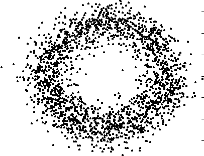
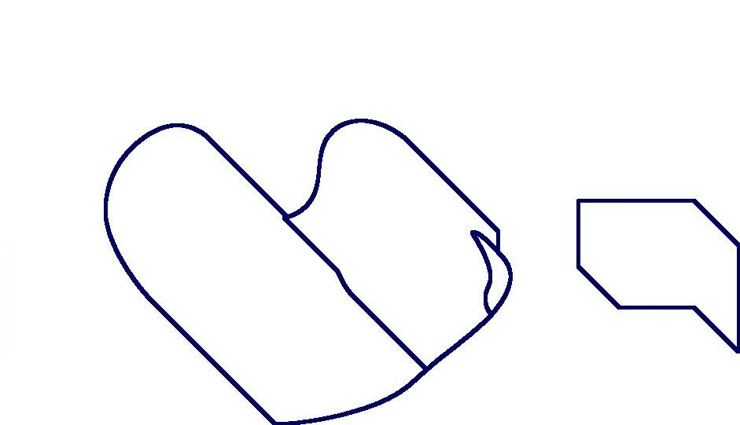
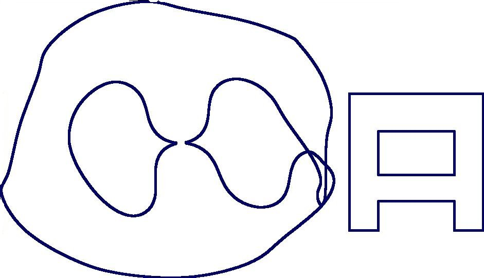
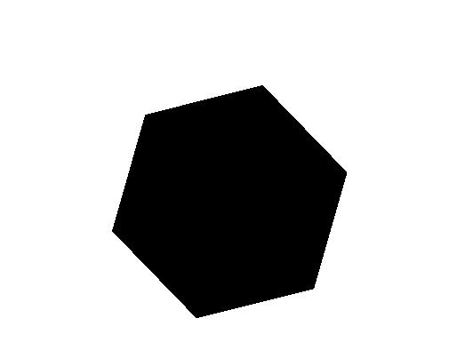
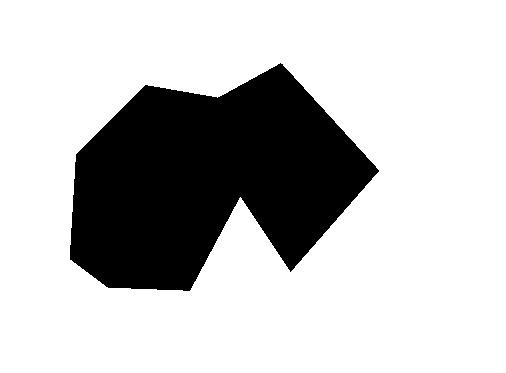
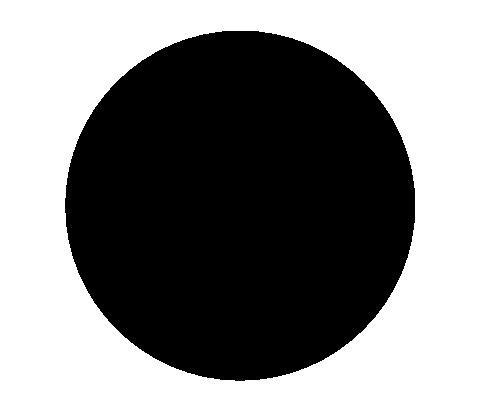
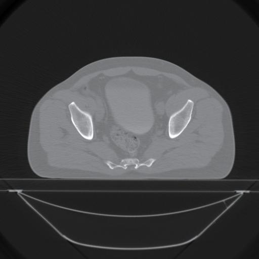
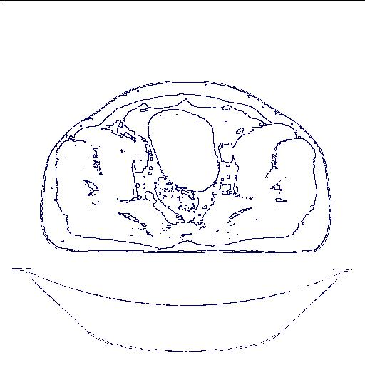

| Previous |
About HAP: Topological Data Analysis |
next |
For example, the following commands investigate a digital photograph by calculating the betti numbers of successive thickenings of the image. The thickenings are intended to reduce the "noise" in the image and to realize the image's "true" betti numbers. Without actually viewing the photograph we can detect that there are probably three connected components and three 1-dimensional holes in it.
{kind=link}
gap> for i in [1..15] do
> Print(BettiNumbers(T),"\n");
> T:=ThickenedTopologicalManifold(T);;
> od;
[ 206, 5070 ]
[ 11, 10 ]
[ 4, 4 ]
[ 3, 3 ]
[ 3, 3 ]
[ 3, 4 ]
[ 3, 3 ]
[ 3, 3 ]
[ 3, 3 ]
[ 3, 3 ]
[ 3, 3 ]
[ 3, 3 ]
[ 3, 3 ]
[ 3, 3 ]
[ 3, 3 ]
Space 1:
 Space 2:
Space 2: 
Space 3:
 Space 4:
Space 4: 
Space 5:

By considering the betti numbers of the "inverted manifolds" obtained by inverting black and white, we can eliminate a few of these as possible ambient isotopy types for the digital photograph.
For example, the following commands show that the photograph is not ambient isotopic to manifolds 2, 3 or 5.
gap> for i in [1..8] do
> T:=ThickenedMatrix(T);
> od;
gap> T1:=ReadImageAsTopologicalManifold("space1.jpg",400);;
gap> T2:=ReadImageAsTopologicalManifold("space2.jpg",400);;
gap> T3:=ReadImageAsTopologicalManifold("space3.jpg",400);;
gap> T4:=ReadImageAsTopologicalManifold("space4.jpg",400);;
gap> T5:=ReadImageAsTopologicalManifold("space5.jpg",400);;
gap> BettiNumbers(ComplementTopologicalManifold(T));
[ 3, 2 ]
gap> BettiNumbers(ComplementTopologicalManifold(T1));
[ 3, 2 ]
gap> BettiNumbers(ComplementTopologicalManifold(T2));
[ 4, 3 ]
gap> BettiNumbers(ComplementTopologicalManifold(T3));
[ 4, 2 ]
gap> BettiNumbers(ComplementTopologicalManifold(T4));
[ 3, 2 ]
gap> BettiNumbers(ComplementTopologicalManifold(T5));
[ 4, 3 ]
gap> BettiNumbers(T1,0);
3
gap> BettiNumbers(PathComponent(T1,1));
[ 1, 3 ]
gap> BettiNumbers(PathComponent(T1,2));
[ 1, 0 ]
gap> BettiNumbers(PathComponent(T1,3));
[ 1, 0 ]
gap> T4:=ReadImageAsTopologicalManifold("space4.jpg",400);;
gap> BettiNumbers(PathComponent(T4,1));
[ 1, 2 ]
gap> BettiNumbers(PathComponent(T4,2));
[ 1, 1 ]
gap> BettiNumbers(PathComponent(T4,3));
[ 1, 0 ]

seems to be sampled from a connected manifold with a 1-dimensional hole. The following computations agree with this observation.
seems to be sampled from a connected manifold with a 1-dimensional hole. The following computations agree with this observation.
gap> T:=ComplementTopologicalManifold(T);; ##These commands should reduce noise.
gap> T:=ThickenedTopologicalManifold(T);; ##
gap> T:=ComplementTopologicalManifold(T);; ##
gap> for i in [1..50] do
> Print(BettiNumbers(T),"\n");
> T:=ThickenedTopologicalManifold(T);;
> od;
[ 924, 0 ]
[ 602, 29 ]
[ 174, 153 ]
[ 75, 181 ]
[ 30, 107 ]
[ 18, 44 ]
[ 13, 31 ]
[ 9, 18 ]
[ 6, 10 ]
[ 4, 5 ]
[ 4, 3 ]
[ 2, 3 ]
[ 1, 1 ]
[ 1, 1 ]
[ 1, 2 ]
[ 1, 1 ]
[ 1, 1 ]
[ 1, 1 ]
[ 1, 1 ]
[ 1, 1 ]
[ 1, 1 ]
[ 1, 1 ]
[ 1, 1 ]
[ 1, 1 ]
[ 1, 1 ]
[ 1, 1 ]
[ 1, 1 ]
[ 1, 1 ]
[ 1, 1 ]
[ 1, 1 ]
[ 1, 1 ]
[ 1, 1 ]
[ 1, 1 ]
[ 1, 1 ]
[ 1, 1 ]
[ 1, 1 ]
[ 1, 0 ]
[ 1, 0 ]
[ 1, 0 ]
[ 1, 0 ]
[ 1, 0 ]
[ 1, 0 ]
[ 1, 0 ]
[ 1, 0 ]
[ 1, 0 ]
[ 1, 0 ]
[ 1, 0 ]
[ 1, 0 ]
[ 1, 0 ]
[ 1, 0 ]
finding a smaller homotopy equivalent subspace Y and then to calculate the homology of Y. The command ContractTopologicalManifold(X) provides a method for finding Y.
The following commands illustrate this.
gap> ViewTopologicalManifold(T); #T is the following manifold.
gap> ContractTopologicalManifold(T);;
gap> ViewTopologicalManifold(T); #Now T is reduced to the following homotopy.

gap> B:=BoundaryTopologicalManifold(T);;
gap> ViewTopologicalManifold(B);

  
The number of features of each of these shapes can be computed using the following commands.
gap> S:=BoundarySingularities(T);;
gap> BettiNumbers(S,0);
6
gap> T:=ReadImageAsTopologicalManifold("shape2.jpg",400);;
gap> S:=BoundarySingularities(T);;
gap> BettiNumbers(S,0);
10
gap> T:=ReadImageAsTopologicalManifold("shape3.jpg",400);;
gap> S:=BoundarySingularities(T);;
gap> BettiNumbers(S,0);
0

Increasing the threshold in steps
of 10, and computing the betti numbers each time, produces the
following results.
> T:=ReadImageAsTopologicalManifold("ctprostate.jpg",n*10);;
> Print(BettiNumbers(T),"\n");
> od;
[ 1, 0 ]
[ 1, 2 ]
[ 7, 0 ]
[ 5, 0 ]
[ 10, 0 ]
[ 9, 1 ]
[ 21, 1 ]
[ 122, 0 ]
[ 835, 7 ]
[ 136, 383 ]
[ 110, 169 ]
[ 20, 95 ]
[ 6, 20 ]
[ 5, 2 ]
[ 5, 1 ]
[ 6, 0 ]
[ 5, 0 ]
[ 6, 1 ]
[ 6, 0 ]
[ 5, 1 ]
[ 5, 6 ]
[ 4, 5 ]
[ 4, 11 ]
[ 5, 7 ]
[ 4, 3 ]
[ 5, 3 ]
[ 6, 3 ]
[ 5, 5 ]
[ 2, 8 ]
[ 3, 10 ]
[ 4, 23 ]
[ 5, 60 ]
[ 5, 102 ]
[ 18, 117 ]
[ 193, 129 ]
[ 419, 115 ]
[ 111, 342 ]
[ 95, 207 ]
[ 114, 201 ]
[ 270, 208 ]
[ 169, 306 ]
[ 35, 558 ]
[ 30, 134 ]
[ 38, 82 ]
[ 23, 44 ]
[ 11, 32 ]
[ 16, 22 ]
[ 10, 20 ]
[ 6, 16 ]
[ 7, 13 ]
[ 5, 17 ]
[ 4, 14 ]
[ 3, 23 ]
[ 2, 25 ]
[ 2, 21 ]
[ 2, 17 ]
[ 4, 16 ]
[ 1, 18 ]
[ 1, 20 ]
[ 1, 26 ]
[ 1, 25 ]
[ 1, 26 ]
[ 1, 23 ]
[ 1, 21 ]
[ 1, 22 ]
[ 1, 25 ]
[ 1, 25 ]
[ 1, 23 ]
[ 1, 23 ]
[ 1, 26 ]
gap> ViewTopologicalManifold(BoundaryTopologicalManifold(T));

| Previous
Page |
Contents |
Next
page |